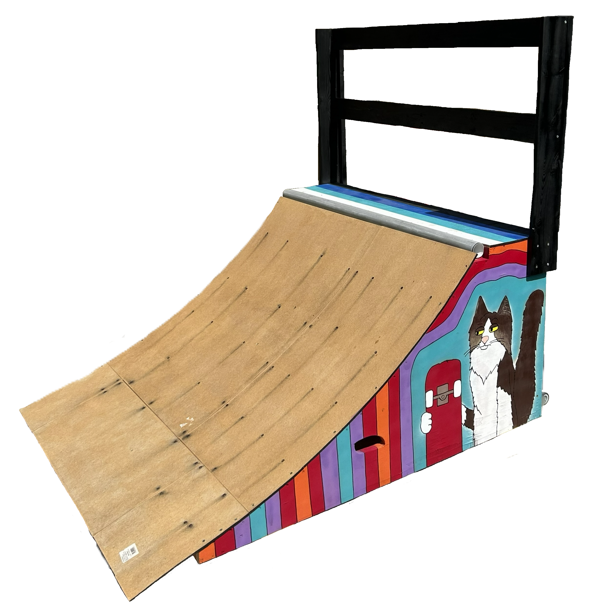
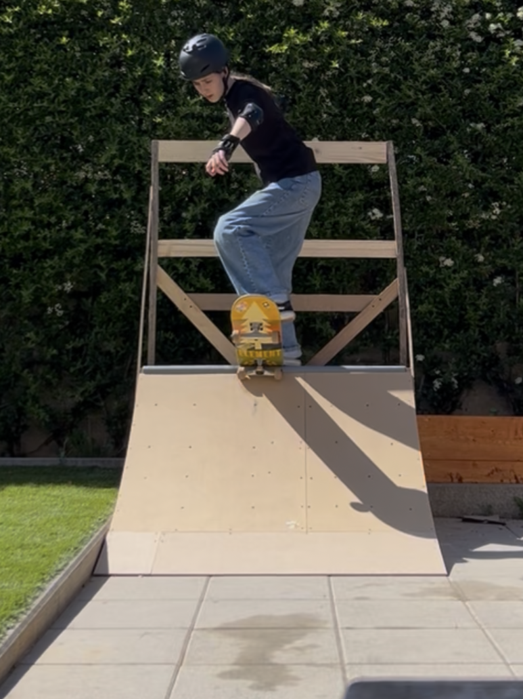
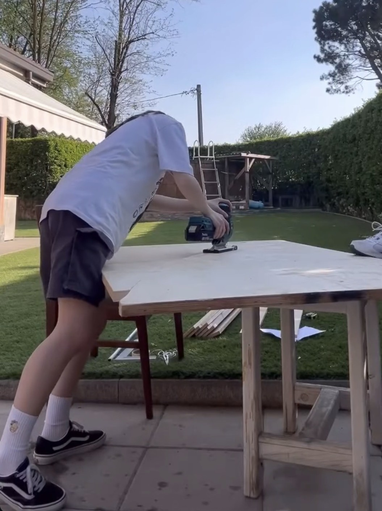
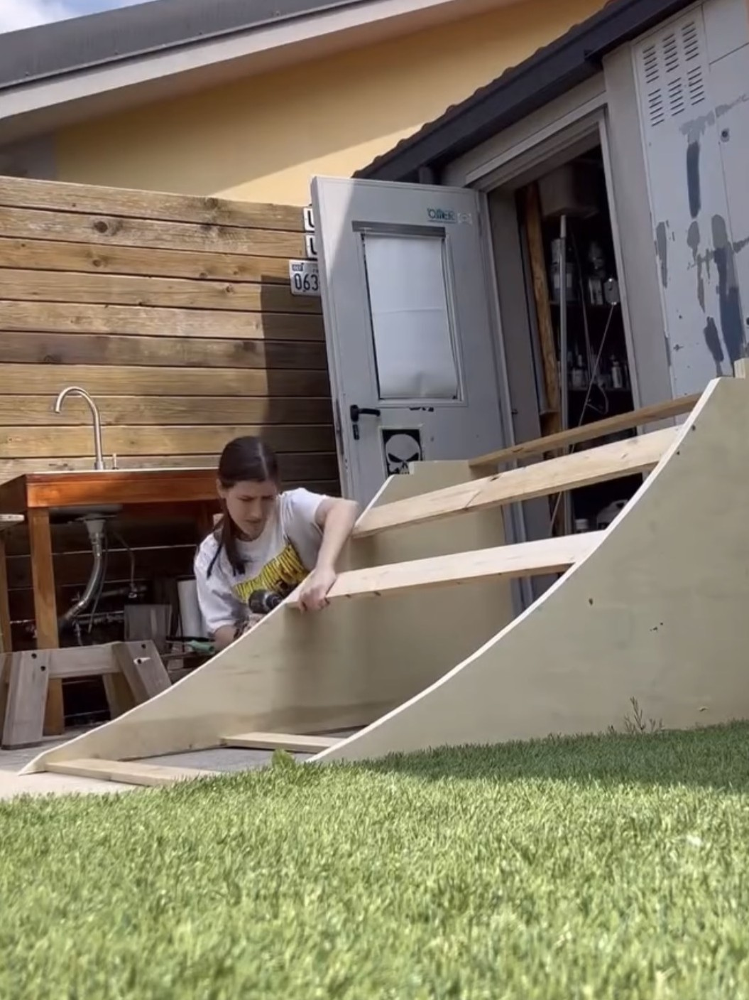
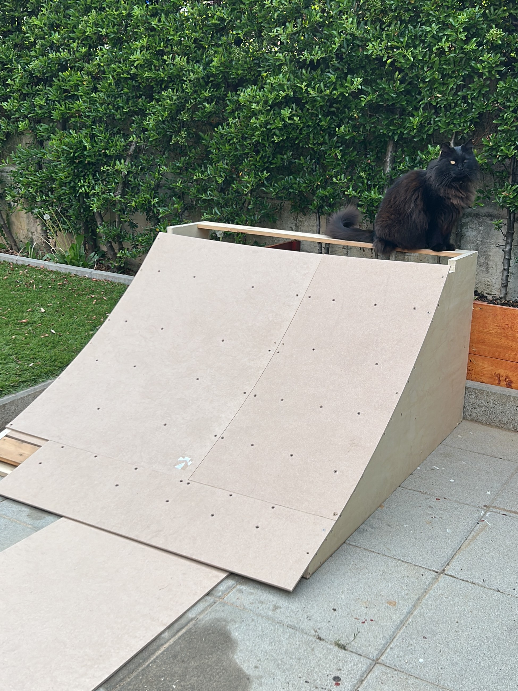
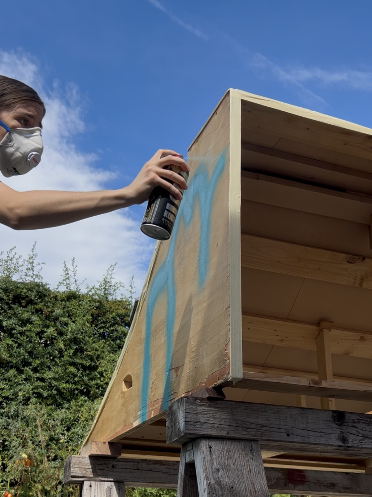
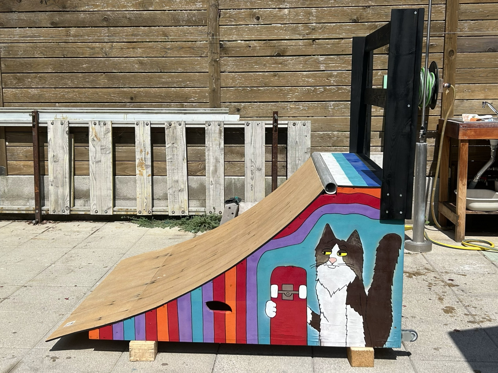
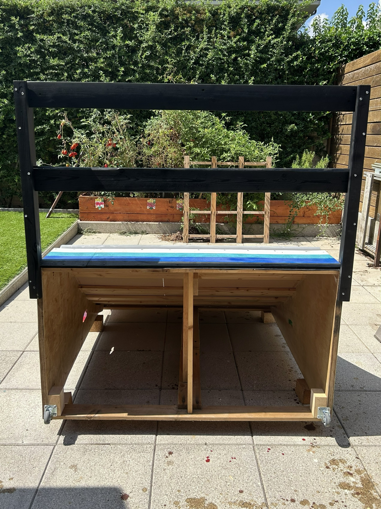
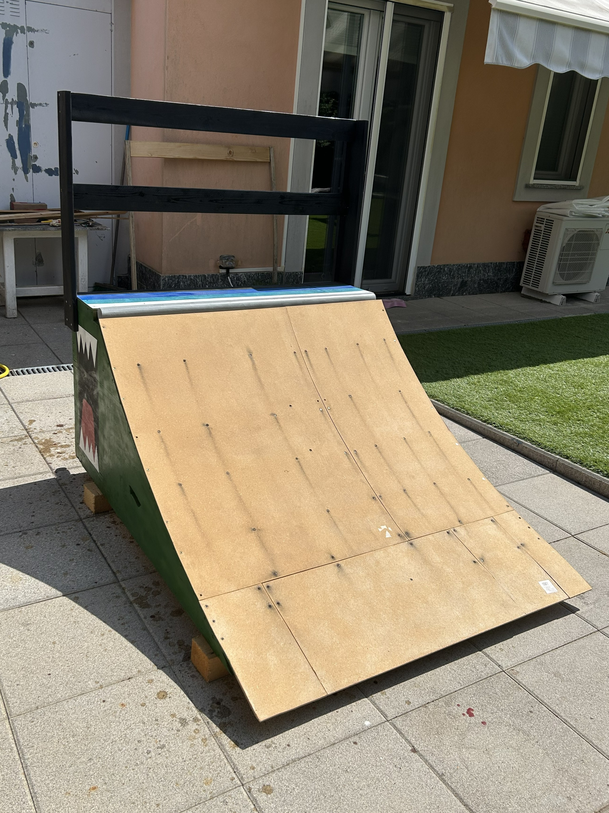

MINI
QUARTER PIPE
SKATEBOARD RAMP
YEAR: April (building) and August (decorating) 2026
DESIGNERS: Emma Listorto
MY ROLE & SKILLS: Sketching, building and painting
Built from scratch using almost entirely reclaimed wood, this mini quarter pipe was created as both a personal hands-on project and a way to introduce children in my residential complex to skating on ramps. Two wheels were added to the base to make it easy to move. The graphic decoration was created with spray paint together with the children, making the final design a shared and collaborative project.

GALLERY







